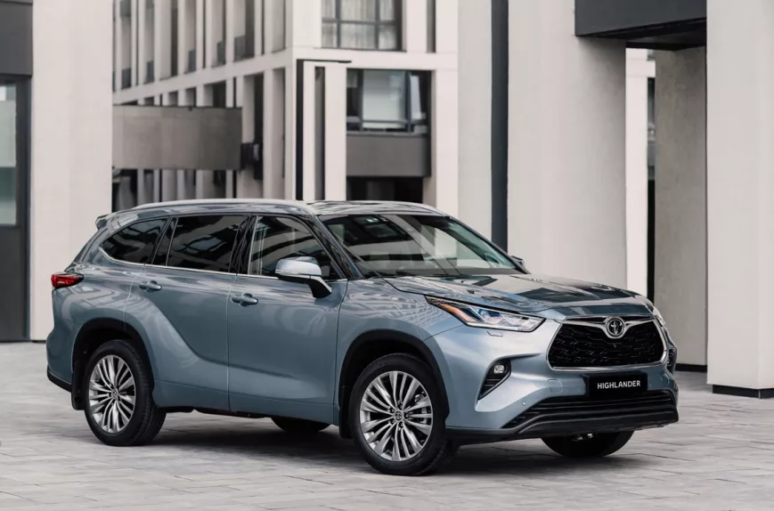

Новая Toyota Highlander (Тойота Хайлендер) четвертого поколения – это полноразмерный кроссовер,
в котором одинаково удобно передвигаться как в городском режиме, так и совершать длительные поездки.
Благодаря использованию глобальной модульной платформы Toyota TNGA-K (Toyota New Global Architecture),
на базе которой построено авто, перед его владельцем открываются новые горизонты комфортной езды
girи отличной управляемости.
